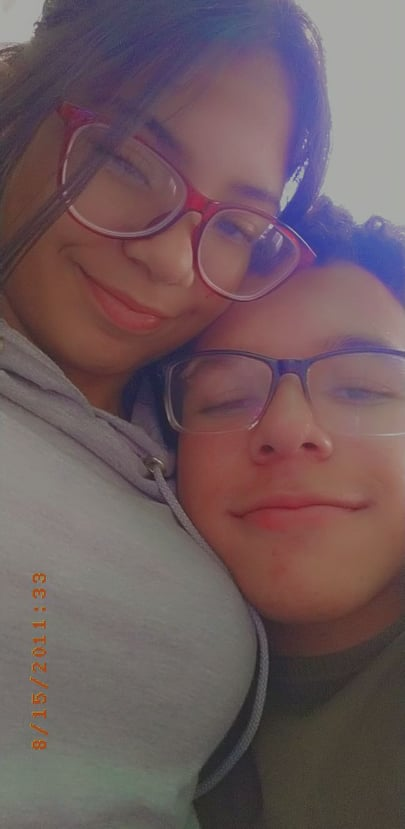
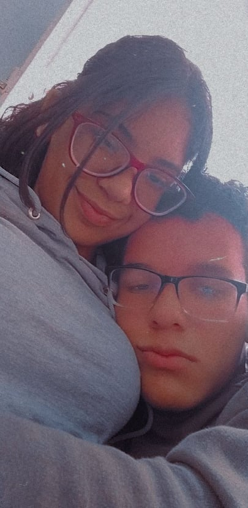
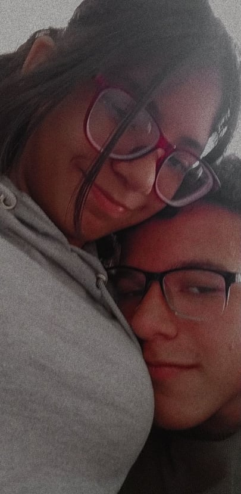
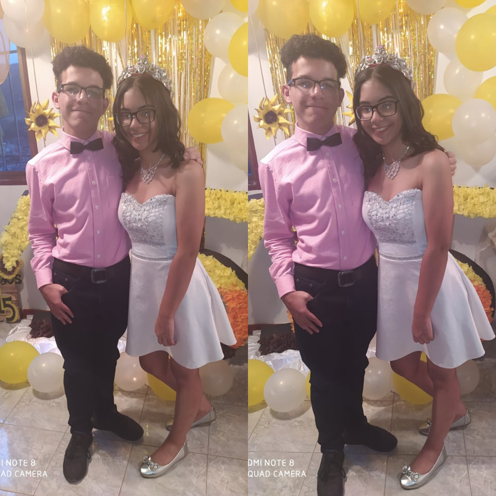

¡Feliz 1er mes!
Mi amooooorrr, ya es el primer mes nmms:((((, estoy muy orgulloso de lo que has logrado por ti misma este mes, como lo de tu voleibol, enserio estoy muy orgullosoooo. Pero estoy más orgulloso de lo que hemos logrado los dos juntos, enserio, nmms, gracias por todito todoooooooooo. Me haces muy feliz:(((, espero vernos el domingo y que ganes tu partido mi amorcito preciosooo. Espero te haya hecho muy feliz este mes, y espero durar mucho tiempo más, por que enserio me haces muy feliz. Y desde que te bese con la canción de "tus besos saben a kiwi con fresa" de fondo supe que eres la indicada djakjkasdkjadkja. O desde que te cante la canción de "Te amo y más" cuando estabas molesta por que no me llevaba el sueter en las llamadas de la noche jakdsk. O como cuando mientraste abrazaba meti la llave en la cerradura para abrir la puerta por que no querias abrirme para que no me vaya jakdsjkdajkdas, o como cuando te hice salir hasta el frentico de tu casa en fachas xd.

¿Recuerdas esa foto?, nmms, fue una de las primeras fotos, fue cuando lleve el sueter verde que nunca más puse por que no se si me queda bien jakdsjkda, pero lo lleve por que queria parecerle decente a tu familia cuando comieramos hamburguesas jkadsakj, por que ese era el día que ibamos a comer hamburguesas xd. Que recuerdos jakdjsak, también en la página que hice, puse un contador de cuantos días, horas, minutos y segundos faltan para cumplir el siguiente mes, que en el momento en el que estoy escribiendo esto faltan 30 días, y nmms, ya 30 días, el tiempo pasa volando:(. El punto es que en el tiempo que hemos estado juntos durante este mes, me siento muy afortunado contigo, enserio me saque la loteria nmms, una morenita con lentes, enana que juega Minecraft conmigo, ve Naruto conmigo, y me da besitos:(.
Aún recuerdo cuando empezamos en todo esto y recuerdo todas las canciones que alguna vez te dedique, y te las mostrare cada una de las canciones que me hacen pensar en ti cuando termines de leer esto. Escuchalas todas, y espero que también te hagan pensar en mi... Enserio, me encantan las llamadas de 3 horas, por esa simple razón, fue que me enamore de ti en primer lugar, en aquella primera llamada mientras hacias pasta y nos haciamos preguntas que literalmente no se de donde me salian, pero no queria colgar, no queria irme a ningun lugar, solo queria seguir escuchando tu voz tan cuchi, solo queria seguir estando contigo...

Gracias por cada abrazo
Gracias por cada canción
Gracias por decirme que sí
Gracias por cada beso en la frente
Gracias por cada momento a tu lado
Gracias por nunca quitarte la cadena
Gracias por todo
Ahora... ¿Recuerdas esta?, fue el mismo día jakdska, recuerdo que ahí vimos el episodio de The Rain, que por cierto esa serie la estoy descargando para verla cuando vengas a mi casa, y llevarla en un pendrive o algo para verla en la PC y eso UwU... También vimos el primer episodio de Nanatsu no Taizai (Los 7 pecados capitales), y me preguntaba sí quieres seguir viendo anime conmigo?:(... Por que tengo muchos animes planeados para ver contigo, tengo muchos descargado y eso, y quiero verlos contigo, no se si quieres:(((((((... Pero de todas maneras, también veremos Sabrina, y Naruto y muchas cosas más UwU... Te amo mucho:(... Enserio me encanta ver cualquier cosa contigo, es lo mejor del mundoooo
"Te amo 3 millones", recuerdo cuando te dije eso en llamada por primera vez... O como cuando dijiste que te moriste y estabas en el cielo y yo te dije que yo también me mori pero dijiste que no que te habias mudado para el infierno en autobus ajkdajksdas, y estuvimos así como por 1 hora tratando de vernos pero como estabas molesta no querias jkadjksa... O como cuando me contaste el cuento de La Princesa y el Sapo por primera vez, y yo pensaba que era de ti como decia Tiana jkajdkas, lo confundia con Diana xd. Pero ajá jakdjakd, ahora ya no digo tanto Diana y ahora te digo más "amorcito" y "amor", ¿ves? UwU

Esta foto fue ese mismo día jkadjksa, y estas fotos me recuerdan mucho al cronometro que habia hecho la otra vez sobre nosotros, y sobre nuestra fecha, bien bomnito:(... Por cierto, si ves esta página que hice en la PC se ve mejor, pero ajá no tienes PC:c, pero dentro de poquito vas a tener mi amor, te lo prometo uwu, sé que el lunes cuando iba a trotar te prometi que nos veriamos pero enserio no puedo, por que tengo demasiada tarea, y de hecho esto lo estoy escribiendo ese lunes jkadjkas, por que si no lo hago hoy no voy a tener tiempo los otros días por la tarea, el cumple de mi hermano, y el cumple de Armando xd. Pero bueno, esto no se trata de mi, se trata de nosotros, y yo me siento muy feliz contigo... ¿Tú sientes lo mismo?:(... Por que desde que te bese aquella primera vez en la gran parada y ya conocias a mi familia dije que eras la indicada:(... ¿Yo soy el morenito con lentes, enano, y que juega Minecraft que has estado esperando?:((
¿Recuerdas cuando baile el vals contigo?, nmms, me senti el chico más afortunado en ese momento, y gracias enserio por haberme dicho para ser tu novio de cuarentena, desde ese entonces solo hay colores en mi vida y enserio gracias por todito todo:(, eres la mejor novia del mundo, y me encantas mucho muchito, eres la mejor, me encantas mucho mi amor:(... Me encantas cabeza e dorito jakdasjkdajkdajkdakj... Mi terroncito de chocolate xd jakdaksjd... Mi amor, eres la mejor del mundo, ¿ok?:(... Y te voy a confiar en la playlist que te hice para el primer mes muchas canciones que me encantan de Guardians of the galaxy uwu... Y eso sera como una tradición, todos los meses te hare una playlist nueva, con canciones de ese mes, por que siempre escucho nuevas canciones, y me gustan mucho, y muchas de ellas las escucho mientras pienso en ti y siempre se quedan allí... Tratare de escuchar nuevas siempre para ponertela en la playlists que haga... Pero bueno, el punto es que gracias por este mes:(... Gracias por haberme contado el cuento de la Princesa y el sapo otra vez por nota de voz, gracias por tomarte las fotos con la gorra que te dije, gracias por ser la mejor novia del mundo, y gracias por todito todo... Enserio graciaaaaas
Sé que esto es muy corto, y la verdad no se que más escribir por que estoy todo estresado y probablemente no te escriba mucho esta semana, y es por que estoy muy ocupado, y perdón por eso, pero aún así saque el poquito tiempo que tengo para hacerte un regalo, no es mucho pero al menos lo hago de corazón, quiero que sepas que te amo, y que eres la mejor del mundo... Espero te guste tu regalo, espero te guste al igual que tu me gustas a mi... Te amo, diana dianita rana...
